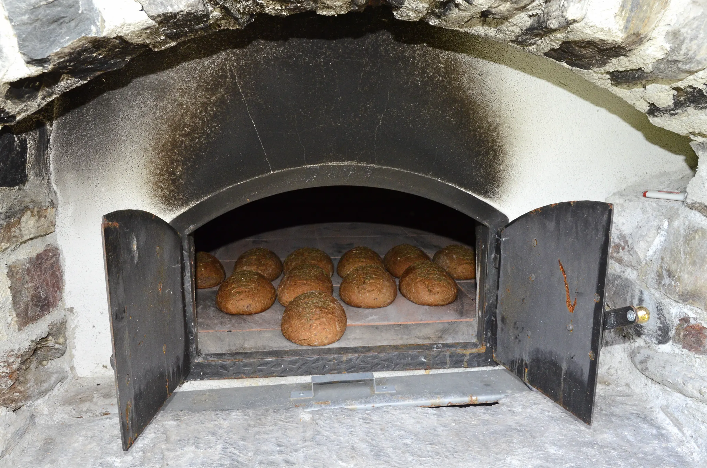
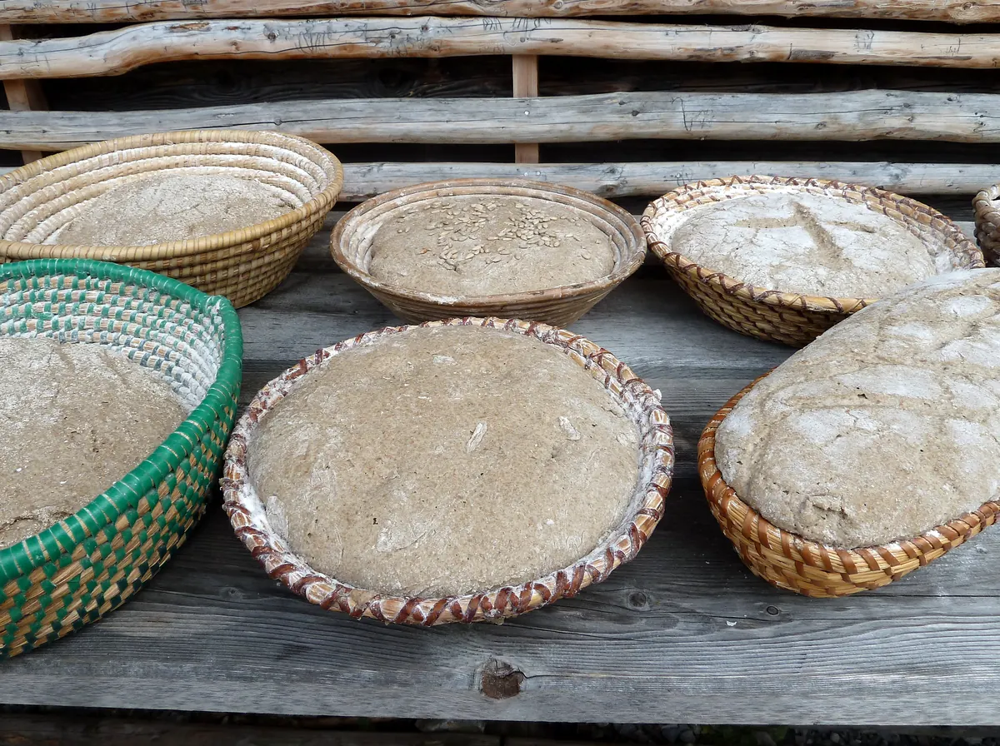
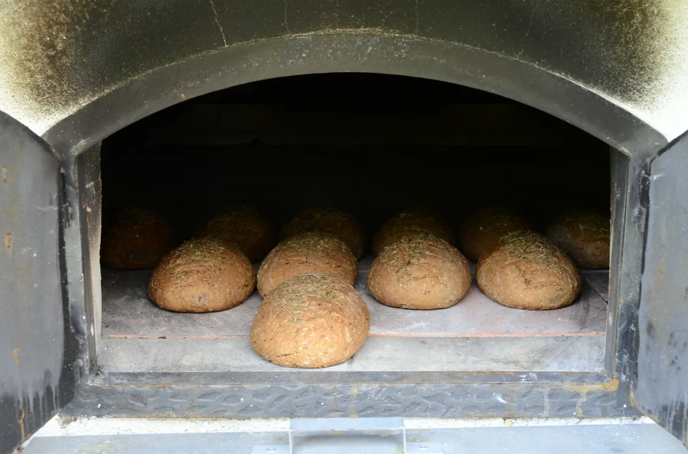

Old town, Tuesday and Friday
Ordered by 18:00, at your door by 7:45.
Fresh rye from 7:00
Sourdough rye with caraway, fired at 280 degrees on a stone floor since 1962. Forty loaves a morning, gone by noon.

Rye, water, salt and a starter older than the shop. Sixteen hours in the cold room, then each loaf is turned out by hand onto the peel.

Order by Thursday for Saturday. Prices per loaf.
The house loaf: dark crust, a tight moist crumb.
Sunflower, linseed and pumpkin in a lighter dough.
Wheat and a little rye; open crumb, thin crust.
One of each, collected from 7:00.

We pull a tray early for anyone who asks. Say so when you order.
Ordered by 18:00, at your door by 7:45.

Every loaf rides in a linen bag, still warm.